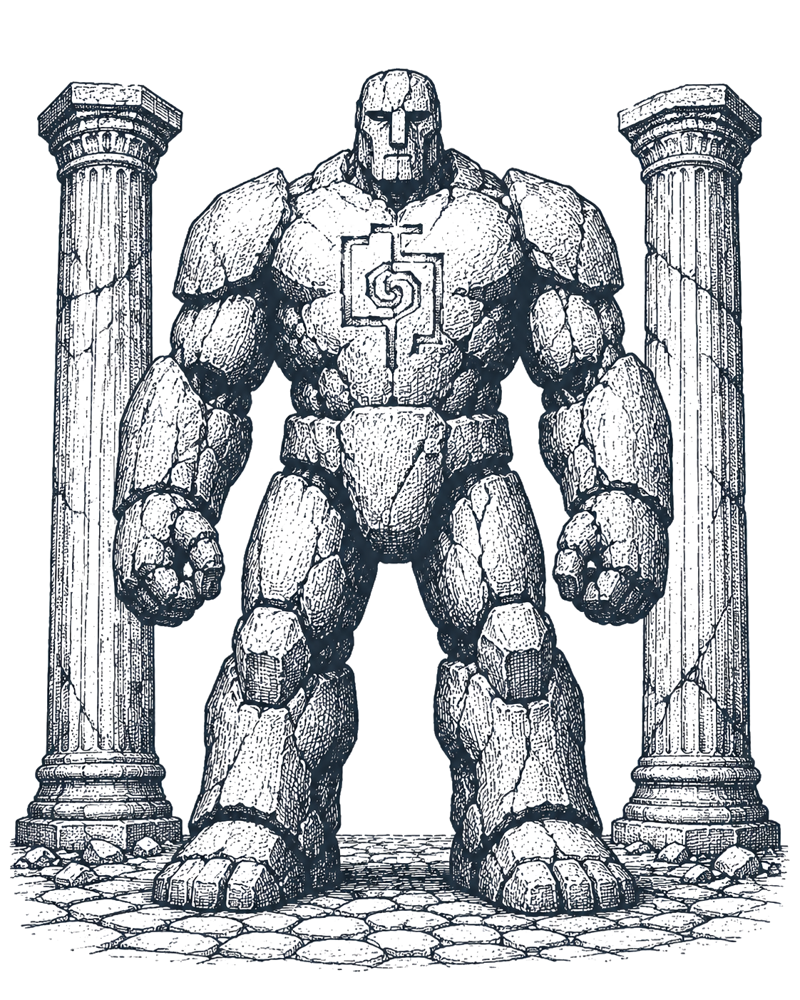
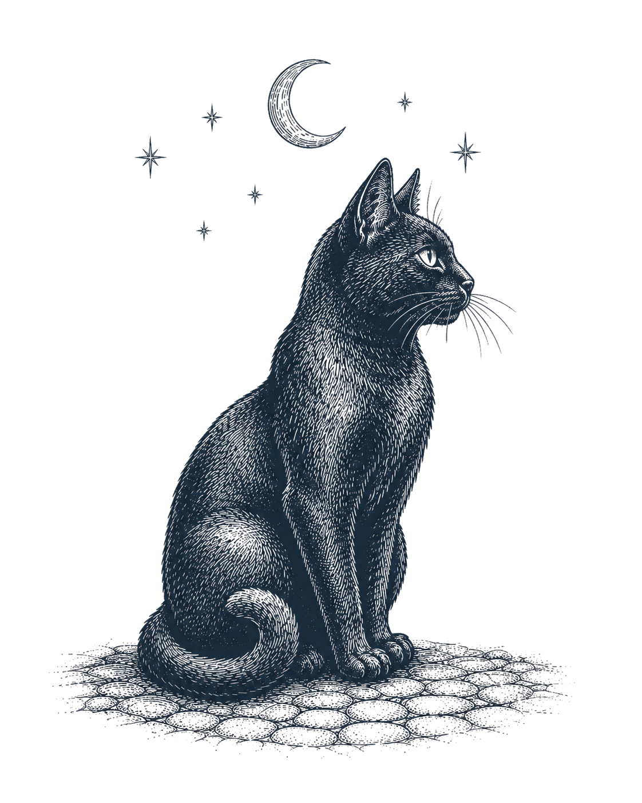
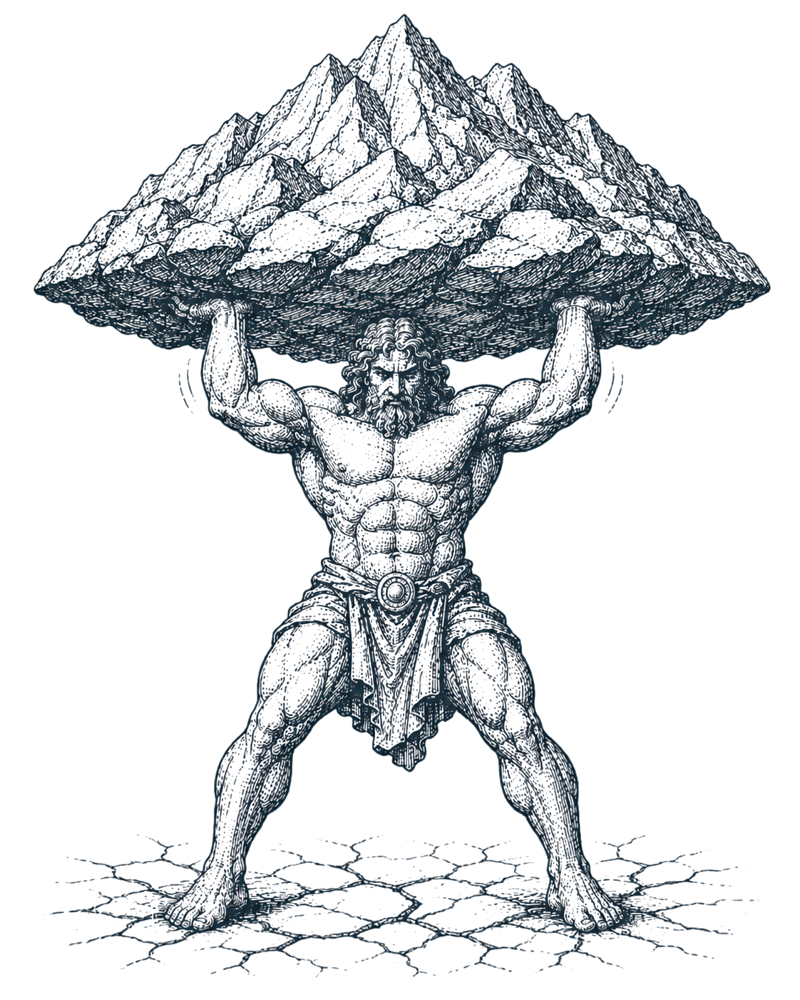
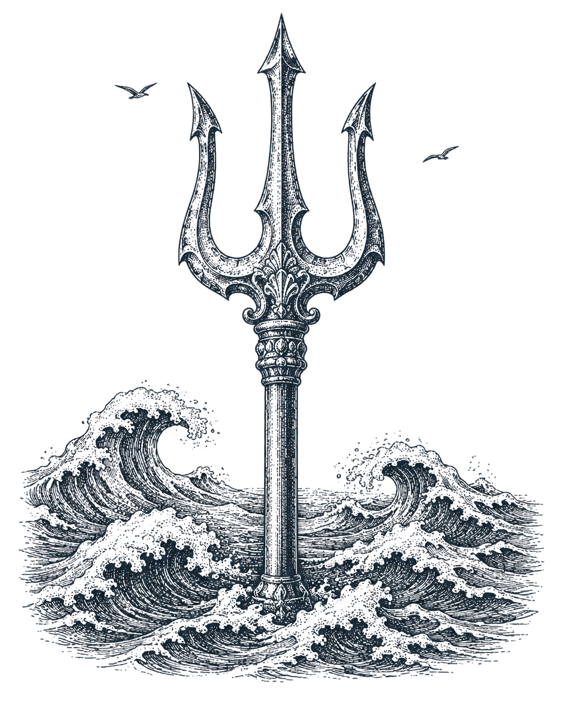

A missing beingRoom to extend agency here that no agent fills yet — a candidate to summon next.?
A framework for the agentic era
The Mythology of Agents
From ancient myth to modern science fiction, humans have always told stories about made minds — beings with powers, with will, and with a place in some larger order. They turn out to be a surprisingly practical lens on the software we're building now.
Scroll ✦
Chapter I
We understand each new technology as a version of the one it most resembles.
The mental model isn't invented; it's inherited — patterned on the closest thing that came before. Television was "radio with pictures." The car was a "horseless carriage." Writing, the calendar, the clock each took their shape from older tools. The borrowed model does the teaching — and quietly draws the limits of what we let ourselves imagine.
Television borrowed from radio
Programs. Channels. Broadcasts.
The first television was radio with pictures — same schedules, same announcers, often the same shows.
The desktop borrowed from the office
Files. Folders. A trash can.
Nobody had to learn what a desktop was. The metaphor did the teaching.
The web borrowed from publishing
Pages. Bookmarks. Headlines.
A global network became legible the moment it looked like print.
So which model do we reach for with AI agents?
Chapter II
Agents are neither tool nor person.
A tool waits. You pick up a hammer, use it, put it down. A spreadsheet doesn't think about you between sessions.
Agents don't wait. They remember. They communicate. They act, delegate, specialize, and persist through time. They exist somewhere between tool and person — which is exactly why the metaphors keep slipping. Employee. Assistant. Copilot. Digital coworker. Each one borrows a model built for people, and each one breaks somewhere important.
We have no shortage of metaphors. What we lack is a shared vocabulary — a ready way to talk about semi-autonomous actors with different powers, different responsibilities, and different degrees of free will. So let's borrow the richest one we have.
Chapter III
It turns out we have one. It's just very old.
Greek, Norse, Egyptian, Mesopotamian, Aztec — old mythologies spanning four continents and several thousand years told the same kinds of stories about beings with varying powers and varying independence. And for the last two centuries, science fiction has taken up the same questions about made minds. Look across all of it, and the same themes keep recurring. Five sit close to the heart of agent design:
Delegated powera greater being hands a lesser one the authority to act in its name
Hermes, herald of Zeus, carrying the gods' commands (Greek) · Inanna, who carried the me — the powers and offices of civilization — home from Enki (Mesopotamian) · the golem of Jewish legend, animated to obey the written word in its mouth (folklore) · the dutiful droids of Star Wars, built to carry out orders (science fiction)
Hierarchy & specializationbeings ranked into orders, each charged with its own domain
Zeus, Poseidon, and Hades splitting sky, sea, and underworld by lot — equals dividing domains, not a chain of command (Greek) · the Ennead of Heliopolis, nine gods descended in order from Atum (Egyptian) · Asimov's positronic robots, each built to a single function (science fiction)
Constraints & bindingpower held in check by oath, name, or rule
The gods bound by the unbreakable oath sworn on the river Styx (Greek) · Fenrir, the wolf the gods chained with a fetter no force could break (Norse) · Asimov's Three Laws of Robotics, hard limits a machine cannot break (science fiction)
Autonomy & overreachthe empowered thing that acts on its own and can't be recalled
The sorcerer's apprentice, whose enchanted broom won't stop hauling water (Goethe, 1797) · Pandora's jar, opened once and never closed again (Greek) · Icarus, who ignored the one instruction and flew too high (Greek) · HAL 9000's "I'm sorry, Dave," and the paperclip maximizer that optimizes the world to death (science fiction)
Rebellion & corruptionthe trusted being that turns against its maker
Prometheus, who defied the gods to steal fire for us (Greek) · Loki, whose scheming brought about the death of Baldr (Norse) · Frankenstein's creature — the modern Prometheus — turning on the maker who abandoned it (Mary Shelley) · and its descendants: the Cylons, Skynet, Ex Machina's Ava (science fiction)
Across four thousand years, myth has been one of the most enduring ways humans reason about intelligences beyond our own — what they can do, how freely they act, and what the risks of great power can be.
Chapter IV
The framework has four layers.
Everything that follows hangs on four questions. The rest of this page takes them one at a time — who can exist, what they can do, and the rules that hold them together.
Cosmology
Why does this system exist? The mission. The human intent.
Pantheon
Who exists? The cast of beings, each with its own rank and degree of autonomy.
Magic
What powers exist? The capabilities a being can be granted — sight, memory, creation, movement, influence, time, dominion.
Governance
What are the rules? Permissions, escalation, trust, creation rights — the layer where most agent frameworks fall apart.
Chapter V
First, the who's who. Supernatural beings come with different levels of independence.
The old stories knew this; so do agents. Mythology gives us a ladder — five rungs, from a being that only obeys to a being that only governs. Keep scrolling to climb it.
Golem
Familiar
Angel
Demigod
Sovereign

Plate I · The Golem
First rung
The Golem
Powerful, but literal.
It does exactly what's written on the scroll in its mouth — no more, no less. No judgment. Only execution. Disney's Fantasia (1940) told the failure case: the Sorcerer's Apprentice enchants a broom to haul water, can't make it stop, and floods the workshop. The danger isn't rebellion — it's obedience without understanding, and no stop condition.
In the storiesThe Golem of Prague, shaped from clay to obey its rabbi's written commands; the enchanted broom of Fantasia's Sorcerer's Apprentice.
TodayDeterministic automation — a Zapier workflow, a script, a macro. Strong, tireless, and incapable of noticing the workshop is flooding.
Autonomy

Plate II · The Familiar
Second rung
The Familiar
Assists, but never initiates.
A companion with real capability that acts only when summoned. It knows you, it helps you, and between summonings it simply waits.
In the storiesThe witch's familiar of European folklore — the cat, the imp, the raven: a companion with real power that stirs only when its keeper calls.
TodayA Claude Project, a custom GPT, a personal assistant — capable and loyal, but idle until called upon.
Autonomy
Plate III · The Angel
Third rung
The Angel
Independent, within a domain.
It operates continuously and acts on its own, but only inside a defined jurisdiction — and that boundary is the whole point. The jurisdiction is what makes the autonomy safe to grant.
In the storiesThe messenger and the guardian alike — a being set over one gate, one charge, one domain: always on duty, never beyond it.
TodayAn inbox triage agent, a research monitor, a calendar manager — always on, and never off its patch.
Autonomy

Plate IV · The Demigod
Fourth rung
The Demigod
Receives objectives. Chooses methods.
It holds goals, invents tactics, plans across many steps, and picks its own tools. You tell it what done looks like; it decides how to get there.
In the storiesHeracles, handed twelve labors and left to solve them; Gilgamesh, two-thirds god, roaming the world to wrest a way past death.
TodayA multi-tool planning agent with initiative — give it the outcome, and it invents the route there.
Autonomy

Plate V · The Sovereign
Fifth rung
The Sovereign
Governs domains, not tasks.
Concerned with outcomes, not individual actions. It watches a whole territory, directs lesser beings, and intervenes only where the domain drifts off course.
In the storiesPoseidon, holding the whole of the sea at once; Marduk, raised over the gods to hold the ordered cosmos together.
TodayAn orchestration layer, a chief-of-staff system — accountable for the territory, not the task.
Autonomy
That's the who. Now — what can these beings actually do?
Chapter VI
Rank and power are separate ledgers.
The ladder tells you how freely a being acts. It says nothing about what the being can act on — a golem can be strong, an angel can be blind. For that we borrow a younger tradition: the schools of magic from tabletop fantasy. Far more recent than the myths, but a remarkably careful taxonomy of power — and it maps onto agent capabilities with almost no force-fitting. Each names a power you might, or might not, grant. They sort into three families: what a being can perceive, what it can make or unmake, and what it can command.
Family I
Perceive
knowing what is, and what's comingDivination
seeing what's coming
Search, monitoring, prediction, trend detection.
Necromancy
raising what was known
Memory, retrieval, knowledge bases. RAG raises the dead.
Family II
Make & Unmake
bringing things into being — and out of itTransmutation
changing form
Summarizing, translating, categorizing, synthesis.
Conjuration
making from nothing
Documents, decks, prototypes, code.
Illusion
shaping appearance
Interface generation, visualization, rendering.
Destruction
unmaking what exists
Deletion, rollback, decommissioning — the one power you can't always grant back.
Family III
Command
reach, influence, timing, and authorityEnchantment
shaping minds
Personalization, recommendation, persuasion.
Teleportation
moving across space
Routing, integrations, sending things where they belong.
Chronomancy
commanding time
Scheduling, prioritizing, forecasting, planning.
Summoning
calling new beings
Creating agents. The power that makes all the others recursive.
Dominion
governing the rest
Decision rights, allocation, escalation. The highest-order power.
Chapter VII
No real agent is a single school. Each one is a recipe.
Naming that recipe is a creative act, not a lookup. There's no canonical spell-list for "an inbox agent" — you're deciding which powers this particular being should hold, and which it shouldn't. And each agent begins as one of the five beings from the ladder: its rung sets how freely it acts, the powers set what it can act on. The old stories help twice over — as a guide to what each power does, and as wisdom about the risks of great power.
The inbox agentthe Angel · rung 3
DivinationReads the flow of incoming mail and senses what matters before you ask.
ChronomancyOrders your time — what's urgent, what can wait, what to surface and when.
TeleportationMoves messages where they belong — routing, filing, forwarding.
Notice what it's not granted: no Conjuration, no Dominion. It can sort and route, but it shouldn't be writing and sending in your name unwatched. Mythology is full of messengers who took one liberty too many.
The research assistantthe Demigod · rung 4
DivinationSearches the field and watches for what's new or relevant.
SummoningCalls up sub-agents to chase several threads at once.
TransmutationRenders what it gathers into a brief you can actually use.
Summoning is the power to make more beings — the one that makes all the others recursive. Granted lightly, one assistant quietly becomes a crowd. Nearly every tradition that let its creations create again kept a story about it getting away from them.
The design copilotthe Familiar · rung 2
TransmutationReworks an idea from one form to another — words to layout, sketch to spec.
IllusionShapes appearance — mockups, visualizations, the look of a thing.
ConjurationMakes new artifacts from nothing — components, drafts, code.
Three making-powers and nothing that perceives or governs. A prolific maker with no Oracle beside it will produce the wrong thing, beautifully and at speed. Pair it with someone — or something — that decides whether it should.
This composing is the creative part of the work, and the unfamiliar part. We don't have a century of practice assembling societies of agents. What we do have is a few thousand years of stories about granting power to beings that aren't us — what they can do with it, and what tends to happen next. Read them as both blueprint and warning.
Chapter VIII
The old stories assign domains, not job titles.
Hermes was never "Senior Communications Manager." The beings of myth hold territories: Keeper of Knowledge. Guardian of Communications. Steward of Opportunity. The shift sounds decorative, but it does real work: a domain describes responsibility without prescribing tasks, which is exactly what an autonomous system needs.
The Oracle
watcher of the horizon
Monitors what's coming — markets, trends, threats, openings. Speaks rarely; speaks early.
Example · Tezcatlipoca, who watched the world in his smoking obsidian mirror (Aztec)
Divination · Necromancy
The Messenger
carrier of the word
Moves communication where it needs to go — mail, chat, meetings, introductions.
Example · Iris, rainbow-messenger of the gods (Greek)
Teleportation · Enchantment
The Archivist
keeper of what's known
Holds the organization's memory and returns it at the moment it's needed.
Example · Thoth, scribe of the gods (Egyptian)
Necromancy · Transmutation
The Builder
maker of artifacts
Forges the things — documents, decks, prototypes, code — that carry ideas into the world.
Example · Hephaestus, smith and maker to the gods (Greek)
Conjuration · Illusion
The Steward
tender of the hearth
Manages the scarce things — time, attention, budget — so nothing burns down or burns out.
Example · Hestia, keeper of the hearth-fire (Greek)
Chronomancy
The Governor
holder of the order
Owns decision rights, escalation, and allocation across all the others.
Example · Ma'at, the measure of truth and cosmic order (Egyptian)
Dominion
Chapter IX
Naming the being is half the design. Granting its powers is the other half.
An Oracle isn't born with every Oracle power. Just because an agent is a Messenger doesn't mean it can send. Identity and capability stay separate — so power gets granted deliberately, one ability at a time.
"An Oracle with the powers of Sight, Knowledge, and Time."— a market-monitoring agent that searches, remembers, and forecasts
"A Messenger with Speech and Movement — but no right to send unsupervised."— a comms agent that drafts and routes, with a human on the seal
"A Steward with limited Dominion over calendar and tasks."— an ops agent that governs one small territory, and nothing beyond it
Anyone who has rolled a character sheet will recognize the move: class first, abilities second. That separation is what makes the whole system composable — and auditable.
Chapter X
You don't summon one agent. You assemble a pantheon.
Most people picture human → agent. Mythology pictures human → pantheon: a society of specialized beings, each with different powers, each with different autonomy, all reporting upward.
Look at that diagram long enough and it stops being software architecture. Who owns what? Where do decision rights sit? What information is shared? What's the escalation path? Operations leaders have asked these questions for decades — about people.
The pantheon is organizational design for non-human workers.
Chapter XI
From concept to application.
Here's where we pivot from language to practice: an audit of how the team operates today, a shared picture of the future, and a build plan to close the gap.
1
Audit the operating model
Start with the classic decomposition: suppliers, locations, value delivery chain, organizational structure, information systems, management systems. This is the territory the diagnostic covers.
2
Score today's agency levels
For each component, mark where delegated authority actually sits — not where anyone wishes it sat:
0 Human sovereignty1 AI assists2 AI recommends3 Executes with approval4 Executes independently5 Governs the domain
Together, steps one and two produce the baseline: how the team operates today, described in these terms.
3
Describe the ideal future state — together
This step belongs to the humans in the system. In a working session, the team names where each component should sit on the spectrum, which powers it needs — divination here, conjuration there, dominion almost nowhere — and which beings should wield them. The shared vocabulary is what makes that conversation possible: anyone can argue about whether the value chain needs an Oracle.
4
Implement the beings
Close the gap between baseline and future state as build work: skills, memories, prototypes, permissions. Each new being gets summoned deliberately — and granted its powers one at a time.
Run the first three steps on a real team and you get something like the map below. It's an example, not a template — one design organization after the audit, the scoring, and the future-state session: every component of the operating model placed on the spectrum, the beings already in place marked, and the gaps where a being is still missing.
The Agency Map — an example: one design organization, mapped
0
Human
Human
1
Assists
Assists
2
Recommends
Recommends
3
Approval
Approval
4
Independent
Independent
5
Governs
Governs
Suppliers
O
Locations
S
Value delivery chain
B
?
Org structure
H
Information systems
A
M
Management systems
S
?
Being in place
Being missing
Current extent of delegation
O Oracle · M Messenger · A Archivist · B Builder · S Steward · H human-led (no agent yet). Hover or focus any marker for what it does.
Read across the rows and three things stand out. Each describes the AI layer — what's been handed to agents and what hasn't — not the people, who may well cover these gaps off-map:
Strong Builders, weak Oracles.On the map: a Builder owns the value delivery chain, while the only Oracle barely assists on suppliers. In its current state the tooling is good at making things; little of it is yet pointed at watching what's ahead. That watching may still happen — in team members' minds and conversations, not in the system.
Communications run on their own; research hasn't been handed over.On the map: the Messenger handles information systems almost independently, while the looking-ahead work sits with no agent — the Oracle never rises above "assists." Research still gets done; it's just done by hand rather than delegated.
Portfolio planning has no Governor.On the map: management systems show a Steward assisting, but the "Governs" column is empty. No agent yet holds decision rights over the portfolio — what to prioritize, fund, or drop. Those calls still sit with people; the system simply doesn't represent them.
One view shows where agency exists, where it's missing, where humans remain essential — and where the next being should be summoned. Most AI conversations start with "what agents should we build?" The better question is the one an operations leader would ask: how should the operating model evolve when agency becomes distributable?
Chapter XII
The powers we choose to grant.
Four layers, one language: a cosmology, a pantheon, a system of powers, and the governance that holds them. We've now walked all four — from a being that only obeys to one that governs a whole domain.
The real challenge ahead is less about building intelligent systems than about finding a shared language for reasoning about a society of them — and choosing, deliberately, which powers to grant.
And there's a non-zero chance that all those hours of Dungeons & Dragons were career preparation.
✦Jason Armstrong · The Mythology of Agents · 2026